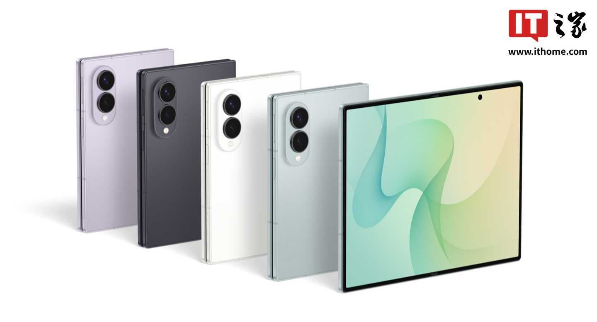
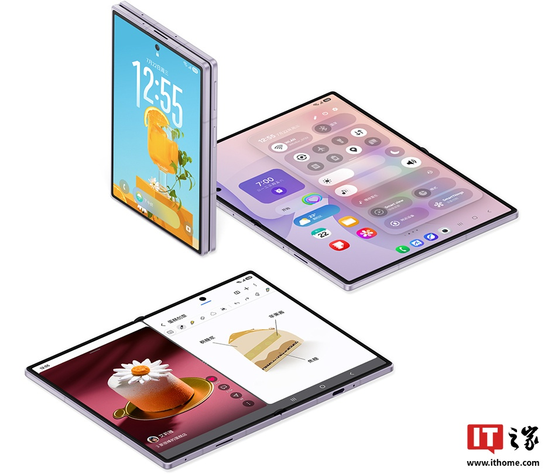

판매 현황
IT홈의 보도에 따르면, 국내 스마트폰 시장 점유율을 추적하는 디지털 블로거 @RD관측이 공개한 Samsung Galaxy Z Fold8 시리즈의 초기 판매 상황은 다음과 같습니다.
- 초기 판매일 기준 SO 약 10K를 기록했으며, 이는 동일 기간 내 Samsung Galaxy Z Fold7의 약 40%에 해당합니다.
- 해당 수치 중 Samsung Galaxy Z Fold8이 약 70%, Samsung Galaxy Z Fold8 Ultra가 약 30%를 차지했습니다.
다만, 해당 데이터에는 Z Flip8 모델이 포함되지 않았습니다.
한국 시장 성과
해당 기기는 한국 시장에서 준수한 판매 실적을 기록했습니다. IT홈의 이전 보도에 따르면, Samsung Galaxy Z Fold8 시리즈는 한국에서 144만 대의 사전 예약을 달성하며 Galaxy 역사상 최고 사전 예약 기록을 경신했습니다.
새로운 외형을 채택한 Galaxy Z Fold8이 가장 높은 인기를 끌었으며 전체 판매량의 약 70%를 차지했습니다. 이는 단일 모델인 Galaxy Z Fold8 폴더블 디스플레이 스마트폰의 사전 예매량이 100만 대에 달했음을 의미합니다.
디스플레이
이 기기는 5.5인치 외부 화면과 7.6인치 내부 폴더블 디스플레이를 탑재했습니다.
- 두 화면 모두 Dynamic AMOLED 2X 패널을 채택했습니다.
- 1Hz에서 120Hz까지의 가변 주사율을 지원하며, HDR10, HDR10+, HLG 디스플레이 표준과 호환됩니다.
카메라
Samsung Galaxy Z Fold8은 후면 듀얼 카메라 시스템을 갖추고 있습니다.
- 5,000만 화소 메인 카메라 (광학 손떨림 보정(OIS) 지원, F1.8 조리개)
- 5,000만 화소 초광각 카메라 (F1.9 조리개)
또한 외부 및 내부 화면에 각각 1,000만 화소의 전면 카메라가 탑재되었습니다. 모든 카메라는 4K 60fps HDR 비디오 녹제를 지원하며, 후면 카메라는 8K 30fps 비디오 촬영이 가능합니다.
성능
이 기기에는 Qualcomm Snapdragon 8 Elite Gen5 for Galaxy 프로세서가 탑재되었습니다.
- 256GB 및 512GB 모델: 12GB 메모리 탑재
- 1TB 최상위 모델: 16GB 메모리로 업그레이드
총평
Samsung Galaxy Z Fold8 시리즈는 한국 시장에서 역대 최고 사전 예약 기록을 경신하며 강력한 인기를 입증했습니다. 고성능 Qualcomm Snapdragon 8 Elite Gen5 for Galaxy 프로세서와 고급형 디스플레이 및 카메라 시스템을 탑재한 것이 주요 특징입니다.
首销与市场表现
根据相关爆料，Samsung Galaxy Z Fold8 系列在首销日的 SO 约为 10K，约占同期 Samsung Galaxy Z Fold7 销量的 40%。
该系列在韩国市场的表现极为强劲，预售量达到 144 万台，打破了 Galaxy 系列史上最高的预售纪录。其中采用新外形的 Samsung Galaxy Z Fold8 受欢迎程度最高，约占总销量的 70%，意味着单款机型的预售量已突破百万台。
产品线分布
在首销数据统计中（不包含 Z Flip8 机型）：
- Samsung Galaxy Z Fold8：占比约 70%
- Samsung Galaxy Z Fold8 Ultra：占比约 30%
核心硬件规格
该系列产品配备了高性能的处理器与先进的显示技术：
- 屏幕：外屏 5.5 英寸，内屏 7.6 英寸，均采用 Dynamic AMOLED 2X 面板，支持 1Hz 至 120Hz 自适应刷新率。
- 影像系统：后置双摄（5000 万像素主摄带 OIS、5000 万像素超广角）；内外屏各配备一颗 1000 万像素前置摄像头。
- 视频录制：支持 4K 60fps HDR 录制，后置镜头支持 8K 30fps 视频拍摄。
- 处理器：搭载 Qualcomm 骁龙 8 Elite Gen5 for Galaxy。
- 内存配置：256GB 和 512GB 版本配备 12GB 内存；1TB 顶配版提供 16GB 内存。
总结
Samsung Galaxy Z Fold8 系列凭借新外观设计在韩国市场取得了突破性成绩，预售量创下系列历史新高。该机型搭载了高性能的 Qualcomm 处理器与高端影像系统，展现出强劲的市场竞争力。
販売状況
ITホームの報道によると、韓国のスマートフォン市場シェアを追跡するデジタルブロガー@RD観測が公開したSamsung Galaxy Z Fold8シリーズの初期販売状況は以下の通りです。
- 初期販売時点で約10KのSO（出荷注文）を記録しており、これは同期間におけるSamsung Galaxy Z Fold7の約40%に相当します。
- この数値のうち、Samsung Galaxy Z Fold8が約70%、Samsung Galaxy Z Fold8 Ultraが約30%を占めています。
なお、このデータにはZ Flip8モデルは含まれていません。
韓国市場での成果
本デバイスは韓国市場において良好な販売実績を記録しました。ITホームの以前の報道によると、Samsung Galaxy Z Fold8シリーズは韓国で144万台の予約注文を達成し、Galaxy史上最高の予約記録を更新しました。
新デザインを採用したGalaxy Z Fold8が最も高い人気を集め、全体の販売量の約70%を占めています。これは単一モデルとしてのGalaxy Z Fold8の折りたたみディスプレイスマートフォンにおいて、予約数が100万台に達したことを意味します。
ディスプレイ
このデバイスは5.5インチの外側画面と7.6インチの内側折りたたみディスプレイを搭載しています。
- 両方の画面にはDynamic AMOLED 2Xパネルを採用。
- 1Hzから120Hzまでの可変リフレッシュレートをサポートし、HDR10、HDR10+、HLGのディスプレイ規格と互換性があります。
カメラ
Samsung Galaxy Z Fold8は背面にデュアルカメラシステムを備えています。
- 5,000万画素メインカメラ（OIS対応、F1.8絞り）
- 5,000万画素超広角カメラ（F1.9絞り）
さらに、外側および内側の画面にはそれぞれ1,000万画素のフロントカメラが搭載されています。すべてのカメラは4K 60fps HDRビデオ録画をサポートし、背面のカメラは8K 30fpsのビデオ撮影が可能です。
性能
このデバイスにはQualcomm Snapdragon 8 Elite Gen5 for Galaxyプロセッサが搭載されています。
- 256GBおよび512GBモデル：12GBメモリを搭載
- 1TBの最上位モデル：16GBメモリにアップグレード
総評
Samsung Galaxy Z Fold8シリーズは、韓国市場で歴代最高の予約記録を更新し、強力な人気を証明しました。高性能なQualcomm Snapdragon 8 Elite Gen5 for Galaxyプロセッサに加え、高級なディスプレイおよびカメラシステムを搭載している点が主な特徴です。
まとめ
Samsung Galaxy Z Fold8シリーズは韓国市場で歴代最高の予約数を記録し、非常に高い人気を博しています。最新のQualcomm Snapdragon 8 Elite Gen5 for Galaxyプロセッサと高品質なディスプレイ・カメラシステムを搭載しており、プレミアムなスペックを備えています。
Sales Status
According to a report by IT Home, the initial sales figures for the Samsung Galaxy Z Fold8 series, as disclosed by digital blogger @RD관측 who tracks domestic smartphone market shares, are as follows:
- Initial sales recorded approximately 10K SO (Shipment Out), which represents about 40% of the volume achieved by the Samsung Galaxy Z Fold7 during the same period.
- Of those figures, the Samsung Galaxy Z Fold8 accounted for approximately 70%, while the Samsung Galaxy Z Fold8 Ultra made up about 30%.
Note that these figures do not include the Z Flip8 model.
Korean Market Performance
The device has recorded strong sales performance in the Korean market. According to previous reports by IT Home, the Samsung Galaxy Z Fold8 series achieved 1.44 million pre-orders in Korea, breaking the record for the highest number of pre-orders in Galaxy history.
The Galaxy Z Fold8, featuring a new design, saw the highest popularity and accounted for approximately 70% of total sales. This indicates that the single model, the Galaxy Z Fold8 foldable display smartphone, reached over 1 million pre-orders.
Display
The device is equipped with a 5.5-inch outer screen and a 7.6-inch inner foldable display.
- Both screens utilize Dynamic AMOLED 2X panels.
- The displays support a variable refresh rate from 1Hz to 120Hz and are compatible with HDR10, HDR10+, and HLG standards.
Camera
The Samsung Galaxy Z Fold8 features a dual rear camera system.
- 50MP main camera (with OIS support, F1.8 aperture)
- 50MP ultra-wide camera (F1.9 aperture)
Additionally, 10MP front cameras are equipped on both the outer and inner screens. All cameras support 4K 60fps HDR video recording, while the rear cameras are capable of 8K 30fps video recording.
Performance
The device is powered by the Qualcomm Snapdragon 8 Elite Gen5 for Galaxy processor.
- 256GB and 512GB models: Equipped with 12GB of memory.
- 1TB flagship model: Upgraded to 16GB of memory.
Overall Review
The Samsung Galaxy Z Fold8 series has demonstrated strong popularity by breaking the record for highest pre-orders in the Korean market. Key highlights include the high-performance Qualcomm Snapdragon 8 Elite Gen5 for Galaxy processor, along with a premium display and camera system.
Summary
The Samsung Galaxy Z Fold8 series achieved record-breaking pre-orders in Korea, driven by its new design and strong demand. It features top-tier specifications including the Qualcomm Snapdragon 8 Elite Gen5 for Galaxy processor and advanced Dynamic AMOLED 2X displays.

